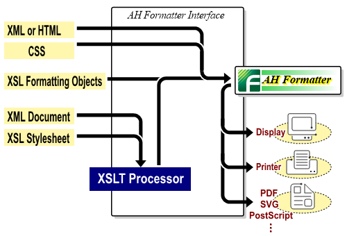

Antenna House Formatter formats XSL Formatting Objects (XSL-FO), XML with XSL stylesheet, or HTML with CSS. The formatted result will be displayed in GUI and outputted or printed to PDF. (Display and printing are available only with the Windows version).
The work flow is as shown below. Antenna House Formatter formats XSL Formatting Objects (XSL-FO), XML with XSL stylesheet, or HTML with CSS. The formatted result will be displayed in GUI and outputted or printed to PDF. (Display and printing are available only with the Windows version).
The work flow is as shown below.Antenna House Formatter formats XSL Formatting Objects (XSL-FO), XML with XSL stylesheet, or HTML with CSS. The formatted result will be displayed in GUI and outputted or printed to PDF. (Display and printing are available only with the Windows version).
The work flow is as shown below.By specifying ‘keep-together’, blocks are placed in the one column.
Antenna House Formatter formats XSL Formatting Objects (XSL-FO), XML with XSL stylesheet, or HTML with CSS. The formatted result will be displayed in GUI and outputted or printed to PDF. (Display and printing are available only with the Windows version).
The work flow is as shown below.